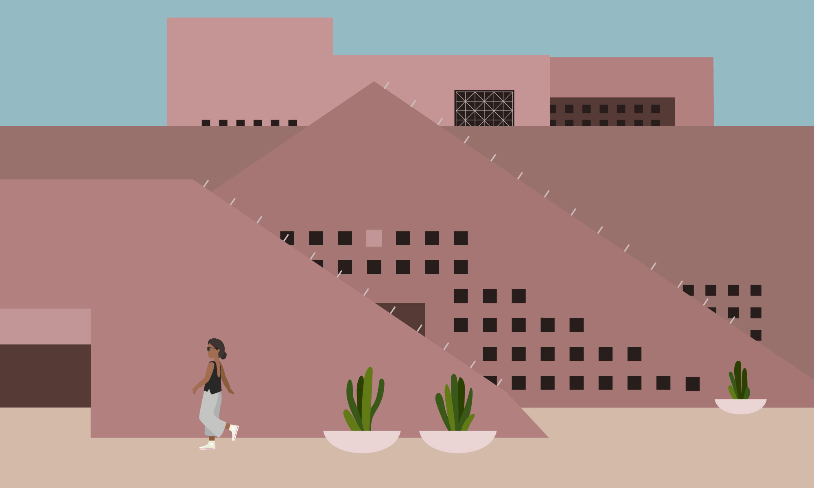
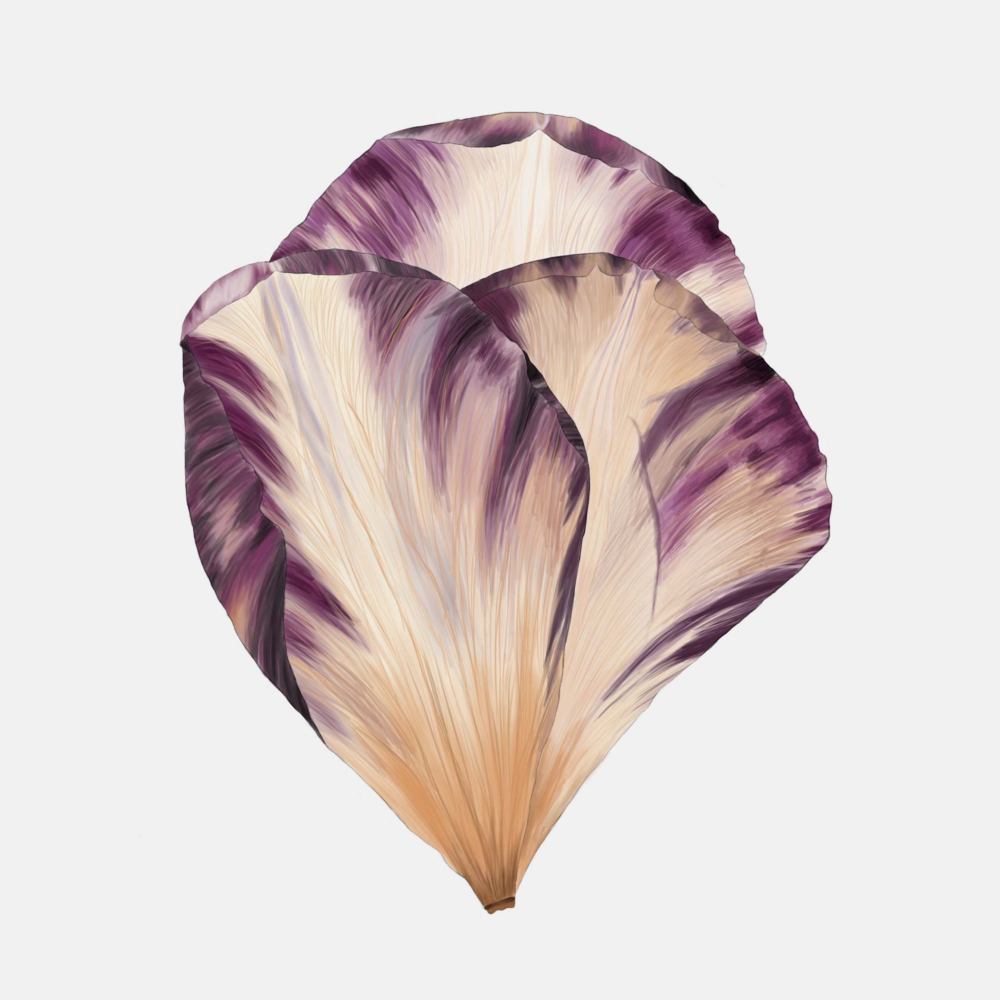
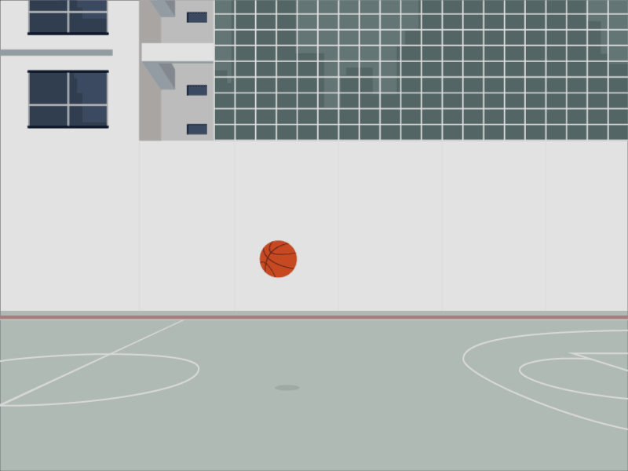
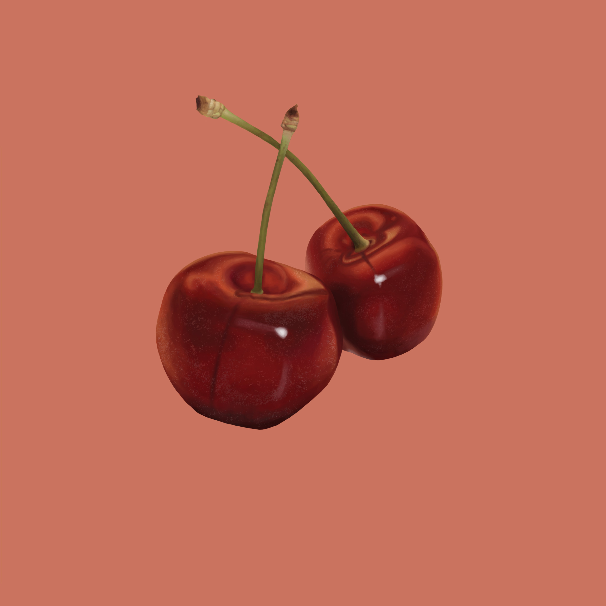
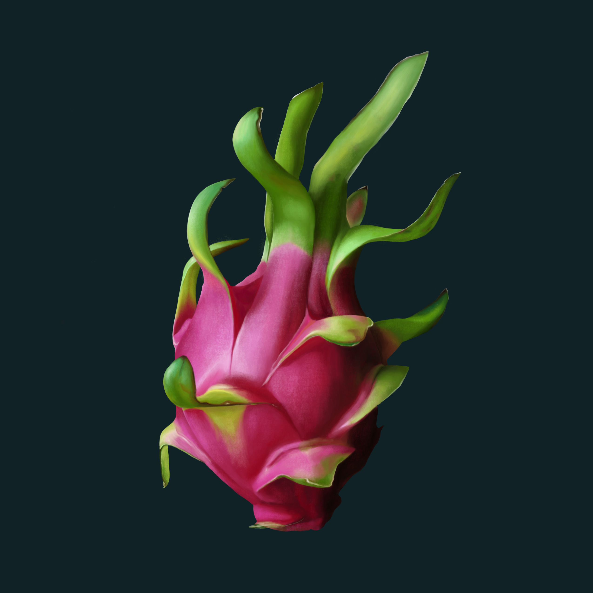
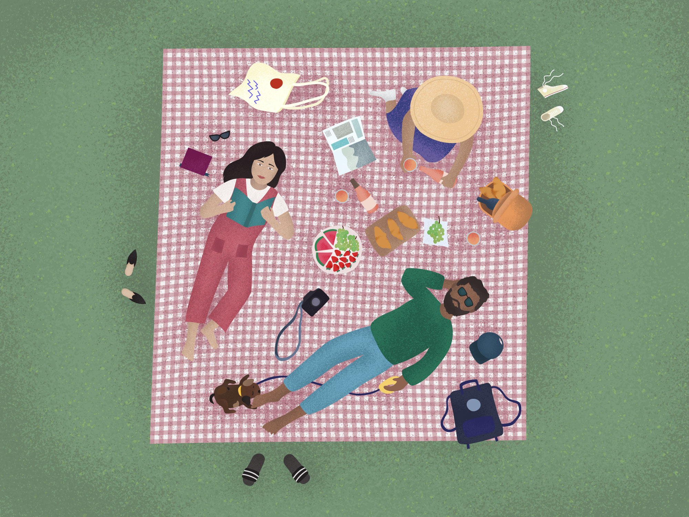
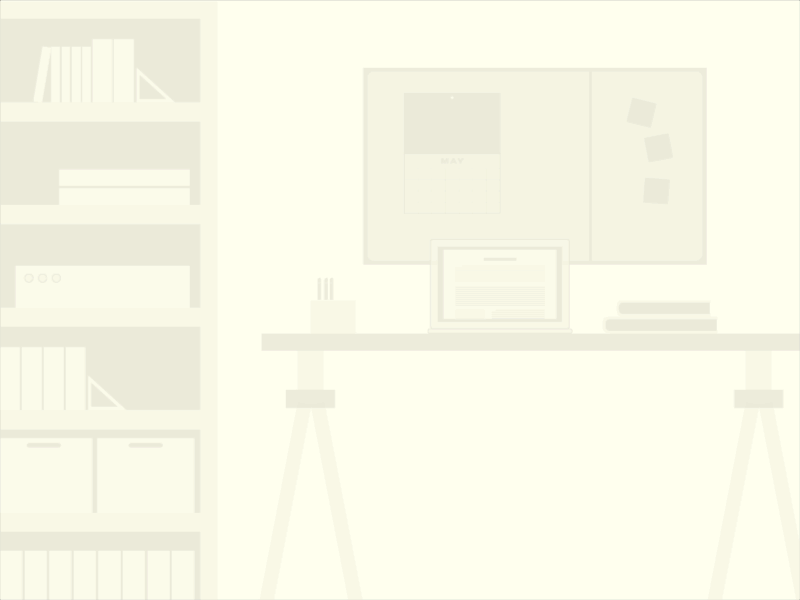
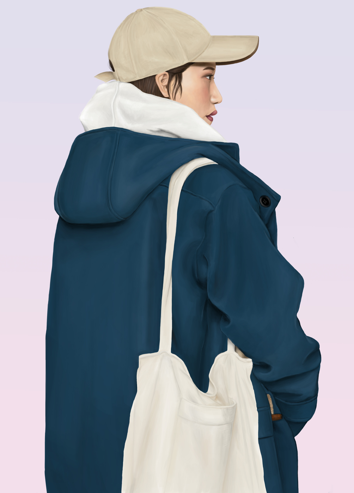
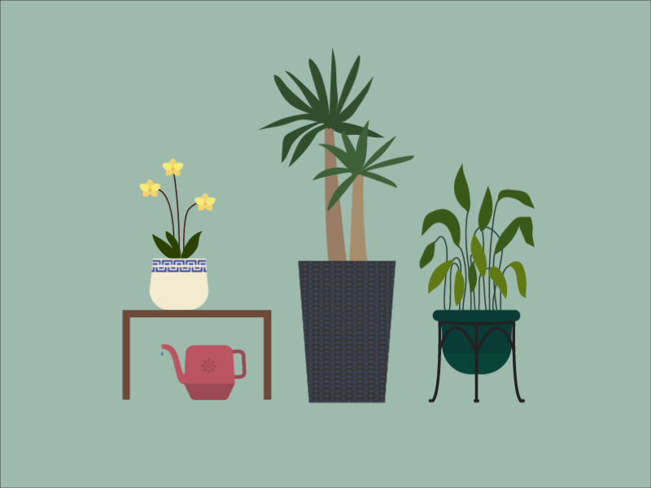

Digital Illustrations An assortment of (personal and project-based) illustrations and digital paintings I have created over the years.

Brutalist & Burnt Browns

One of my first digital paintings using a Wacom tablet

Basketball Court — visual inspiration from Marco Barbieri's For Lack of Better Places series

FRUITY — Cherry

FRUITY — Dragon Fruit

Summer Picnics

Working Hard or Hardly Working *wink wink*

Playing with depth and drapery

My Mom's Plant Children — made this animation for Mother's Day!